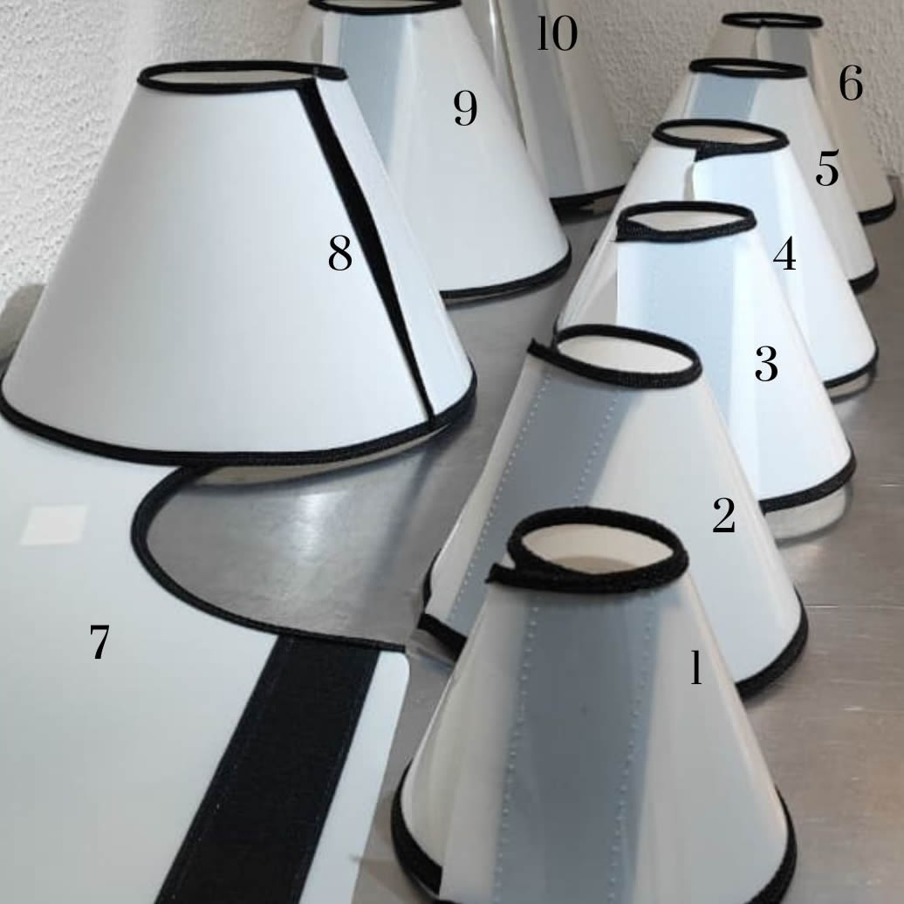

Colar Elizabetano Cirúrgico com Fivelas
Recuperação segura e sem complicações! O seu pet passou por cirurgia ou está com ferimentos? Evite infecções e acelere a cicatrização com o colar elizabetano ajustável de proteção.
Principais Benefícios:
- Impede que o pet lamba ou morda a região afetada
- Evita abertura de pontos e infecções indesejadas
- Fechamento com fivelas para ser mais firme e seguro
- Leve, resistente, confortável no pescoço (Tamanhos Nº1 ao 10)
Por que confiar a recuperação do seu pet à Luapet Care?
Curadoria Veterinária
Cada item do nosso estoque passa pelo crivo de uma médica veterinária, garantindo eficácia e segurança.
Apoio na Escolha do Tamanho
Chega de comprar roupas que ficam apertadas ou largas demais. Nós auxiliamos na medição correta.
Foco em Recuperação
Diferente de pet shops comuns, somos especialistas em produtos para o pós-operatório pet em SP.
Agilidade no Atendimento
Sabemos que o pós-cirúrgico não espera. Atendimento rápido para quem tem pressa e urgência.
Como garantimos o melhor cuidado para seu pet
Contato Inicial
Você nos chama no WhatsApp e informa qual procedimento seu pet realizou ou realizará.
Consultoria de Tamanho
Solicitamos o peso e as medidas básicas para indicar a roupa cirúrgica ou colar ideal.
Escolha dos Produtos
Montamos o kit de recuperação (higiene + proteção) conforme a sua necessidade.
Retirada ou Entrega
Você retira em nossa loja na Vila Maria ou recebe com agilidade na Zona Norte.
Onde encontrar roupa cirúrgica para pet em SP
A Luapet Care está estrategicamente localizada na Vila Maria, sendo o ponto de apoio ideal para tutores que buscam produtos para pós-operatório pet na Zona Norte de São Paulo. Atendemos com dedicação toda a região, oferecendo suporte presencial e via WhatsApp.
Endereço:
R. Pref. Milton Improta, 400 - Vila Maria - São Paulo-SP
Bairros Atendidos:
Vila Maria, Vila Guilherme, Santana, Tucuruvi e toda a Zona Norte.
Atendimento / Horário:
WhatsApp: (11) 92149-6355
Seg a Sex: 08:30 às 17:00 | Sáb e
Dom: Fechado
Perguntas Frequentes sobre Recuperação Pet na Vila Maria
Esclareça suas dúvidas com quem entende do assunto.
Nós ajudamos você nesse processo! Basta nos enviar o peso aproximado e a raça pelo WhatsApp que orientamos a medição correta para evitar trocas.
A roupa protege a incisão diretamente, enquanto o colar impede que o pet lamba ou morda qualquer parte do corpo ou arranque curativos. Muitas vezes, o uso combinado é o mais seguro.
Sim, atendemos a Vila Maria e bairros vizinhos na Zona Norte com opções de entrega agilizada para garantir que seu pet não fique desprotegido.
Nossa loja física fica na Rua Pref. Milton Improta, 400. Somos especializados exatamente em itens para cães e gatos recém-operados.
Com certeza. Nossos produtos são selecionados por uma médica veterinária e nossa equipe é treinada para orientar qual item é mais adequado para cada tipo de cirurgia.
Além da roupa ou colar, recomendamos tapetes higiênicos de alta absorção e, em alguns casos, comedouros elevados para evitar esforços excessivos do animal.
Sim, trabalhamos com tapetes de performance superior que mantêm a patinha e o local da cirurgia secos, evitando contaminações por umidade.
Estamos localizados em uma área de fácil acesso na Vila Maria. Você pode clicar no mapa em nosso site para traçar a rota diretamente pelo GPS.
Não arrisque a recuperação do seu pet. Fale com especialistas!
O pós-operatório exige cuidados precisos. Evite infecções e desconfortos com a roupa cirúrgica correta e orientação profissional.
Respondemos rapidamente para ajudar você e seu pet.